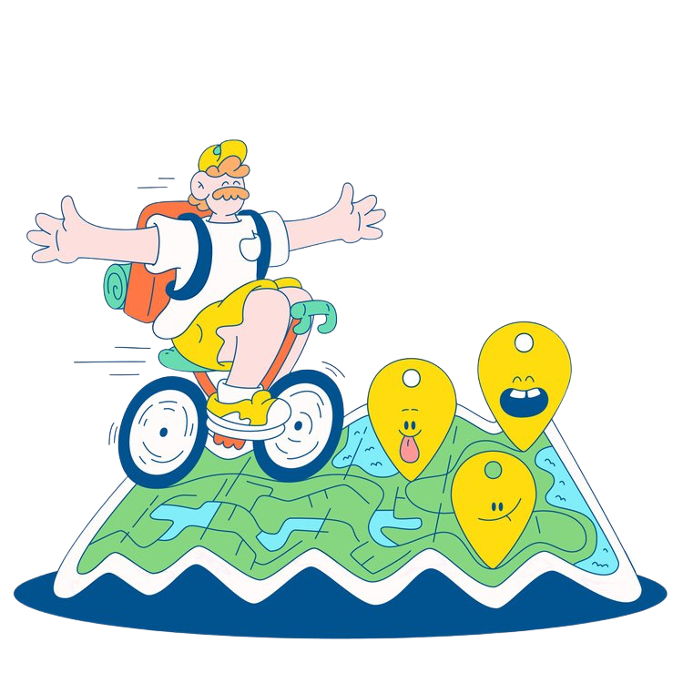

MY JOURNEY
Let’s take a look at my university journey!
A FIRST YEAR
- First meet : ได้รู้จักเพื่อนใหม่และรุ่นพี่เยอะมากขึ้น
- 2 month with CSTU : ได้ลองท้าทายตนเองหลายๆอย่างและได้เป็นส่วนหนึ่งในทีมPR ของสาขา
- Self-improvement : อยากพัฒนาในด้านการเขียนโปรแกรมให้มีประสิทธิภาพมากขึ้น
- Expectation : คาดหวังว่าจะสามารถสอบผ่านวิชาCSทั้งสามตัวได้
A SECOND YEAR
- Learning : ทำโครงงานหรือกิจกรรมต่างๆเพื่อเริ่มต้นเก็บเรซูเม่
- Self-improvement : อยากพัฒนาในด้านจัดการเวลาของตนเอง
- Expectation : คาดหวังว่าจะได้ความรู้ในด้านการเขียนโปรแกรมภาษาอื่นๆได้
A THIRD YEAR
- Learning : เก็บเกี่ยวประสบการณ์ๆ และเริ่มเรียนวิชาโทที่สนใจ
- Self-improvement : อยากลองหาทุนการศึกษาสำหรับไปศึกษาดูงานที่ต่างประเทศ
- Expectation : คาดหวังว่าจะสามารถทำเก็บเรซูเม่ได้มากพอที่จะยื่นฝึกงานตามบริษัทที่ต้องการ
A FORUTH YEAR
- Learning : เริ่มฝึกงานและได้ประสบการณ์จากการฝึกงงาน
- Self-improvement : ตั้งใจฝึกงานเพื่อสามารถนำไปต่อยอดในอนาคตได้
- Expectation : คาดหวังว่าจะได้เกรดดีๆก่อนเรียนจบ